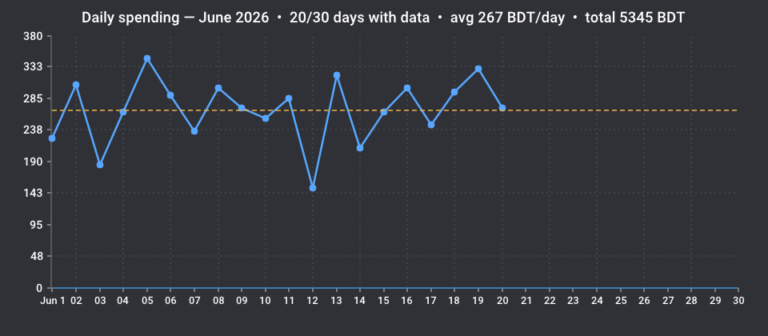

Prepaid electricity · Asia/Dhaka
nesco-monitor reads a NESCO prepaid account once a day and posts a clean daily-consumption chart to your Discord — keeping the numbers honest across recharges and NESCO's flaky balance cache.
The hard part
Spending is just the day-to-day drop in balance. Two real-world quirks break that math — and most trackers fall for both.
Every morning
One message a day: the balance, the change since yesterday, and the month's chart — with an @here only when you're actually running low.

Under the hood
Three corrections turn a noisy prepaid balance into a chart you can trust.
Energy credited by each top-up is added back over the interval it lands in — so a recharge day reads as real consumption, never a gap or a negative spike.
Polls at 05:00 Asia/Dhaka, five hours after the midnight refresh, and skips any reading identical to the previous one.
Consumption between two readings is spread evenly across the days they cover, so stale or missing days fill in as a smooth line.
One small daemon
A ~14 MB statically-linked binary in a scratch image. Point it at an account and a webhook.
Quickstart
The SQLite file lives in a named volume, so your balance and recharge history survive restarts.
docker run -d \ --name nesco-monitor \ --restart unless-stopped \ --env-file .env \ -e DB_PATH=/data/nesco.db \ -v nesco-data:/data \ wpkpda/nesco-monitor:latest
Set NESCO_ACCOUNT_NO and DISCORD_WEBHOOK_URL in .env. Multi-arch build (amd64 + arm64), full configuration, and a from-source path are in the README.